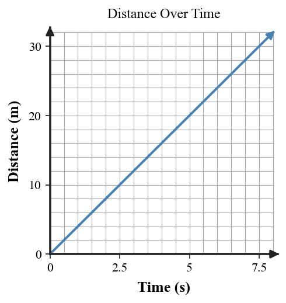
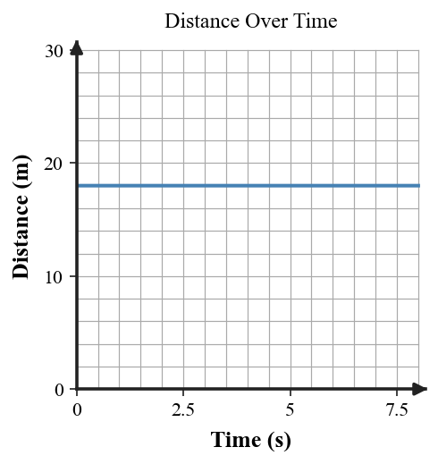

Practice focus: Distinguish speed from velocity and use distance, time, and direction to describe motion.
Define average speed in words.
State the relationship used to calculate average speed from distance and time.
Which description gives speed only: 8 m/s or 8 m/s east?
Which description gives velocity: 12 m/s or 12 m/s north?
What extra information must velocity include that speed does not?
Classify “55 km/h west” as speed, velocity, or neither.
Classify “100 meters” as speed, velocity, or neither.
Classify “4 m/s toward the door” as speed or velocity.
State whether two objects can have the same speed but different velocities.
Define instantaneous speed in everyday language.
On a distance-time graph, what does a straight rising line with constant slope suggest?

On a distance-time graph, what does a horizontal line suggest?

A runner travels 150 m in 15 s. Calculate average speed and include units.
A cart moves at a constant speed of 10 m/s for 18 s. Determine the distance traveled.
A cyclist travels 180 m at 10 m/s. Determine the travel time.
Runner A moves 7 m/s north and Runner B moves 7 m/s south. Compare their speeds and velocities.
Rewrite “the car travels 6 m/s” as a complete velocity statement.
A toy car travels 0, 12, 24, and 36 m at times 0, 3, 6, and 9 s. Calculate average speed and decide whether the data support constant speed.
| Time (s) | 0 | 3 | 6 | 9 |
|---|---|---|---|---|
| Distance (m) | 0 | 12 | 24 | 36 |
Use the distance-time graph to determine whether the object is moving or at rest and explain what graph feature supports your answer.
Use the horizontal distance-time graph to determine the object’s speed and explain your reasoning.
Two walkers travel 80 m in 10 s and 45 m in 5 s. Calculate both average speeds and identify who is faster on average.
A swimmer travels 50 m in 20 s. Calculate average speed, then interpret what the numerical value means.
A car’s speedometer reads 20 m/s while it turns east. Explain why the speedometer alone does not give the full velocity.
A cyclist covers equal 30 m distances in equal 5 s intervals. Use the pattern to predict the distance after one additional interval.
A student says, “If two objects have the same speed, they have the same velocity.” Critique the claim with a specific counterexample.
A table shows equal distance gains in equal time intervals. Explain how the table, a straight distance-time graph, and the phrase constant speed are connected.
A student computes 90 m / 15 s = 6 m/s and labels the result “velocity.” Explain what is correct and what information is missing.
Compare average speed with instantaneous speed for a runner who speeds up and slows down during one lap. Explain why the two quantities can differ.
Design a simple walking investigation to measure average speed. Identify measurements, calculation, units, and one way to make the result more reliable.
A class has a distance-time graph, a data table, and a written story for a cart. Describe a method for deciding whether all three represent the same constant-speed motion and what evidence you would compare.